1 Introduction
This vignette provides a step-by-step introduction to the MetaNB package, which implements a trivariate random-effects meta-analysis of prevalence, sensitivity, and specificity, to indirectly meta-analyze Net Benefit, along with associated value-of-information (VOI) metrics for quantifying decision uncertainty. The trivariate random-effects meta-analysis is described in detail in (Wynants et al. 2018), and the associated VOI framework is described in [ref placeholder].
This vignette demonstrates a typical workflow: importing study-level data, fitting a trivariate meta-analysis model, assessing convergence, summarizing posterior draws, visualizing results with forest plots, and obtaining VOI metrics when decision uncertainty is of interest.
The main input is a data frame with one row per validation setting. Depending on the application, a validation setting may correspond to a study, center, hospital, registry, or other independently evaluated dataset. At minimum, the model-fitting function requires columns for the number of true positives, true negatives, events, and non-events. Additional columns such as study label, country, and reported point estimates and confidence intervals, can be included and later used for forest plots.
The central function is MA_NB_tri(). It fits the Bayesian trivariate random-effects model and returns posterior MCMC samples, together with metadata about the model fitting process and prior settings. Downstream functions then work from those posterior samples. For example, summarize_tri_ma() summarizes selected posteriors, and plot_forest() visualizes study-specific, pooled, and predictive results.
When compute_EVPI = TRUE and other related arguments are supplied, MA_NB_tri() also monitors the additional quantities needed for VOI analysis and returns VOI metrics in the same fitted object. This allows the meta-analysis summaries, forest plots, and VOI metrics to be based on the same MCMC run.
2 Example data
The IOTA-ADNEX is a regression model that distinguishes between benign and several types of malignant adnexal masses (Van Calster et al. 2014). The dataset used in this vignette is from a systematic review of external validation studies of ADNEX (Barreñada et al. 2024), in which sensitivity and specificity were meta-analyzed at the commonly used 10% risk of malignancy threshold.
For illustration purposes, we restrict the dataset to studies in which ADNEX was used with CA125, and refer to this subset as data_ADNEXCA125. The dataset is available in the MetaNB package, and is loaded automatically with library(MetaNB). It contains the numbers of true positives and true negatives, numbers of events and non-events, reported sensitivity and specificity with corresponding confidence intervals, as well as characteristics of each validation setting such as publication, country, sample size, and prevalence. In this example dataset, rows correspond to validation centers rather than studies, so studies containing multiple centers may contribute more than one row.
| Publication | Country | N | Prev | n_nonevent | n_event | TP | TN | sens_point | sens_ci_low | sens_ci_high | spec_point | spec_ci_low | spec_ci_high |
|---|---|---|---|---|---|---|---|---|---|---|---|---|---|
| Araujo (2017) | Brazil | 131 | 0.5190840 | 63 | 68 | 63.9880 | 34.9650 | 0.9410 | NA | NA | 0.5550 | NA | NA |
| Chen (2022) | Taiwan | 281 | 0.2064057 | 221 | 58 | 53.0120 | 175.9470 | 0.9140 | 0.8420 | 0.9860 | 0.7890 | 0.7360 | 0.8430 |
| Diaz (2017) | Venezuela | 227 | 0.2995595 | 159 | 68 | 62.9952 | 132.9876 | 0.9264 | NA | NA | 0.8364 | NA | NA |
| He (2022) | China | 620 | 0.3516129 | 402 | 218 | 191.9708 | 378.2820 | 0.8806 | 0.8358 | 0.9254 | 0.9410 | 0.9179 | 0.9641 |
| Jeong (2020) | South Korea | 54 | 0.1851852 | 44 | 10 | 9.0000 | 34.9800 | 0.9000 | NA | NA | 0.7950 | NA | NA |
| Joyeux (2016) | France | 284 | 0.1056338 | 254 | 30 | 27.0000 | 205.9940 | 0.9000 | NA | NA | 0.8110 | NA | NA |
Throughout this vignette, we use data_ADNEXCA125 as a running example to illustrate the package functionality.
3 Fit the trivariate random-effects meta-analysis
3.1 Basic fit without VOI
MA_NB_tri() fits the Bayesian trivariate random-effects model for prevalence, sensitivity, and specificity described in (Wynants et al. 2018). It takes the number of true positives (tp), true negatives (tn), the number of events (n_event) and the number of non-events (n_nonevent) as input. A threshold (t) for which true positives and true negatives are defined is also needed to compute the net benefit and related metrics.
By default, the model is fitted using weak realistic priors (prior_type = "weak") under the product-normal parameterization using priors specified in (Wynants et al. 2018). For most applications, the default prior settings can safely be used and do not require adjustment. The section on “Weak realistic priors (advanced options)” below provides more details on the implementation of the weak realistic priors and how to modify them if needed. It is generally recommended to compare results with different prior specifications to assess sensitivity to the choice of prior.
The argument return_vars controls which parameters are returned. By default, net benefit related quantities and the posterior probability of clinical usefulness are returned. Additional quantities can be requested if needed (see ?MA_NB_tri for details).
The argument seed can be set for reproducibility so we get the same results when we run the same code multiple times and when others run the same code. This seed argument sets the RNG seed for each JAGS chain, and the argument rng_name can be used to specify the type of random number generator (RNG) used in JAGS. By default, we use the “base::Wichmann-Hill” RNG, which is a commonly used RNG in JAGS.
# basic fit without VOI
MA_NB_tri(data = data_ADNEXCA125, # data frame containing the data
tp = TP, tn = TN, n_event = n_event, n_nonevent = n_nonevent, # column names in the data frame for the input data
prior_type = "weak", # type of prior to use, either "weak" or "wishart"
t = 0.1, # threshold for defining true positives and true negatives
return_vars = c("NB", "RU", "probuseful", "sens", "spec"), # we additionally request relative utility (RU), sensitivity (sens), and specificity (spec) because these quantities will be used later in the vignette
seed = 123, # random seed for reproducibility
prev_known = 0.5, # this is to calculate conditional estimates of net benefit assuming a known prevalence
return_known = TRUE # return the conditional estimates of net benefit assuming a known prevalence
)3.2 Fit with VOI enabled
To obtain value-of-information (VOI) metrics such as the expected value of perfect information (EVPI), we can run the following code with the same function, but with some additional arguments to enable the VOI calculations. We will elaborate more on this when we discuss the VOI analysis in more detail later in the vignette. For now, the main point is that we can obtain VOI metrics as part of the same model fitting process, without needing to run a separate function or workflow, and we should use the same fitted object throughout once we’ve decided to include the calculation of VOI metrics, because the VOI metrics are ideally based on the same MCMC sampling process and same posterior samples as the other quantities of interest.
# fit with VOI enabled
fit_voi <- MA_NB_tri(data = data_ADNEXCA125,
tp = TP, tn = TN, n_event = n_event, n_nonevent = n_nonevent,
prior_type = "weak",
t = 0.1,
return_vars = c("NB", "RU", "probuseful", "sens", "spec", "pooledprev"),
seed = 123,
prev_known = 0.5,
return_known = TRUE,
# VOI specific arguments
compute_EVPI = TRUE, # enable the computation of VOI quantities
auto_resample = FALSE, # whether to automatically draw additional samples until diagnostics indicate that the EVPI estimates are stable
center_rows = 1:36, # which rows (centers) to calculate the center-specific EVPI calculation
center_label_cols = c("Publication", "Country") # which columns to use for labeling the centers in the output of center-specific EVPI
)Including estimates/predictions at assumed know prevalence: prev_known = 0.5Computing center-specific EVPI for rows: 1, 2, 3, 4, 5, 6, 7, 8, 9, 10, 11, 12, 13, 14, 15, 16, 17, 18, 19, 20, 21, 22, 23, 24, 25, 26, 27, 28, 29, 30, 31, 32, 33, 34, 35, 36Compiling model graph
Resolving undeclared variables
Allocating nodes
Graph information:
Observed stochastic nodes: 108
Unobserved stochastic nodes: 3122
Total graph size: 27220
Initializing model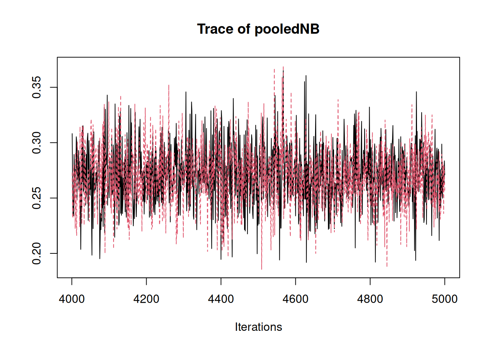

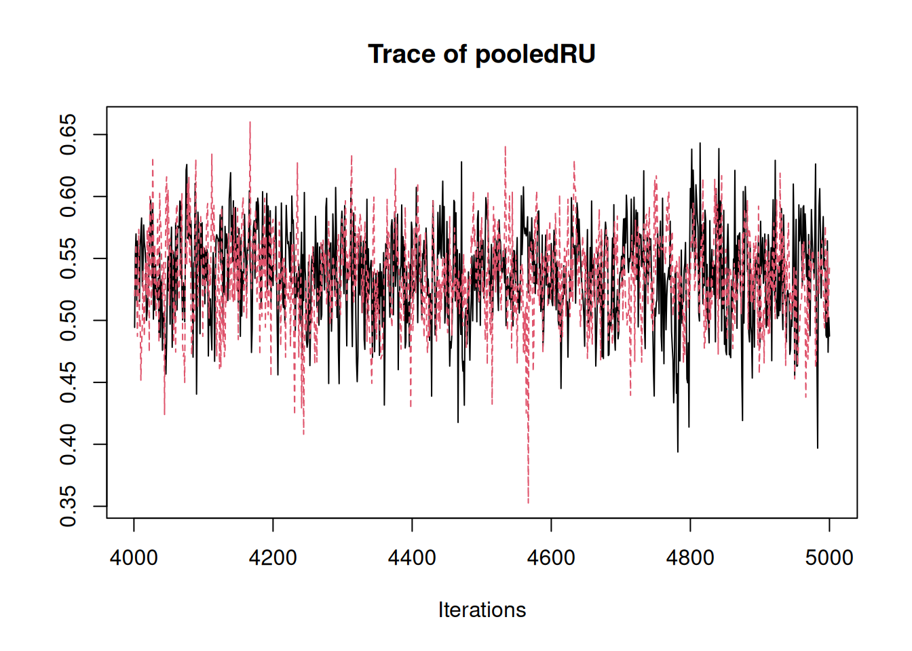


3.2.1 Weak realistic priors (advanced options)
Here we briefly describes how the weak realistic priors are implemented in MetaNB. This is mainly relevant if we wish to modify hyperparameters or conduct prior sensitivity analyses. More details can be seen in Wynants et al. (2018).
In our implementation, the logit prevalence is controlled by etap, the summary logit prevalence. The logit sensitivity and specificity are defined through relationships that depend on prevalence:
etapis the summary logit prevalence (prior:etap ~ dnorm(mu_etap, tau_etap)).lambdasens0andlambdasens1define the summary logit sensitivity (mean.sens) aslambdasens0 + lambdasens1 * etap.lambdaspec0,lambdaspec1, andlambdaspec2define the summary logit specificity aslambdaspec0 + lambdaspec1 * etap + lambdaspec2 * mean.sens.
Between-study heterogeneity is represented through variance parameters for prevalence, sensitivity, and specificity (varprev, varsens, varspec), with half-normal priors. Correlations among the three outcomes are represented by corr.sens.spec, corr.spec.prev, and corr.sens.prev. In our specification, two correlations (correlations between logit sensitivity and logit specificity, and between logit specificity and logit prevalence) use Fisher-z normal priors (zss, zsp) and one correlation uses a uniform prior (corr.sens.prev ~ dunif(a_csp, b_csp)). Visualizations of those priors can be found in Figure A1, the Appendix from Wynants et al. (2018).
Users interested in the full model specification can inspect the JAGS code in model_text_weak.R in the GitHub repository.
We can override any subset of these hyperparameters using weak_priors = list(...). Any values not supplied remain at their defaults, which makes it straightforward to run prior sensitivity analyses.
For example, to change only the prior mean for etap (the summary logit prevalence), we can supply:
3.2.2 Get details on model fitting
To get details on the settings and priors used in the model fitting, we can check the following elements of the fitted object, which contain the meta-information about the model fitting process. For example, we can get details on the prior used and hyperparameters used for prior specification by running the following code, where the first line of code tells us which type of prior is used, and the second line of code gives us the specific hyperparameter values for the priors that are used in the model fitting process. This is particularly useful when we run multiple models with different priors and want to keep track of which model uses which priors, or when we want to report the details of the priors used in our analysis for transparency and reproducibility.
fit_voi$meta$prior_type
fit_voi$priors_used[1] "weak"# A tibble: 15 × 2
prior value
<chr> <chr>
1 mu_etap 0
2 tau_etap 0.001
3 mu_lambdasens0 0
4 tau_lambdasens0 0.001
5 mu_lambdaspec0 0
6 tau_lambdaspec0 0.001
7 mu_zss -0.2
8 tau_zss 4
9 mu_zsp -0.2
10 tau_zsp 4
11 a_csp -0.99
12 b_csp 0.99
13 tau_varprev 0.25
14 tau_varsens 0.25
15 tau_varspec 0.25 Other meta-information about the model fitting process, such as MCMC settings, can also be found in the meta element of the fitted object. For example, we can check the MCMC settings used for the model fitting by running fit_voi$meta.
fit_voi$meta$t
[1] 0.1
$prev_known
[1] 0.5
$prior_type
[1] "weak"
$returned
[1] "NB" "pooledNB" "pooledNB_TA"
[4] "NBnew" "NBnew_TA" "pooledNB_known"
[7] "pooledNB_TA_known" "NBnew_known" "NBnew_TA_known"
[10] "RU" "pooledRU" "RUnew"
[13] "pooledRU_known" "RUnew_known" "probuseful"
[16] "probuseful_known" "sens" "pooledsens"
[19] "sensnew" "spec" "pooledspec"
[22] "specnew" "pooledprev" "ENBnew"
[25] "ENBnew_TA" "prevnew" "NB_TA"
$n.chains
[1] 2
$n.adapt
[1] 1000
$burnin
[1] 3000
$iter
[1] 1000
$thin
[1] 1
$saved_per_chain
[1] 1000
$total_saved
[1] 2000
$seed
[1] 123
$RNG_name_per_chain
[1] "base::Wichmann-Hill" "base::Wichmann-Hill"
$RNG_seed_per_chain
[1] 123 124
$rounds
[1] 1
$stop_reason
[1] "auto_resample=FALSE"4 Convergence assessment
We can control the MCMC settings through arguments such as the number of chains(n.chains), adaptation iterations (n.adapt), burn-in (burnin), sampling iterations (iter), and thinning(thin). By default, the function runs 2 chains with 1000 iterations each, adaptation iterations of 1000, a burn-in of 3000 and a thinning of 1. After adaptation and burn-in, trace plots of a set of pooled quantities (for example pooledsens, pooledspec, pooledNB, pooledNB_TA, and pooledRU) are shown by default as a rough check. The set of nodes used for these trace plots can be adjusted via diag_vars, or turned off by setting diag_vars = NULL.
After fitting the model and obtaining the posterior samples, we can perform a formal convergence check using the returned MCMC output.
The fitted object contains the posterior samples as a coda::mcmc.list object. We can use the traceplot() function from the coda package to visualize the MCMC chains for selected parameters. The parameters must be included via the return_vars argument when fitting the model. For example, to check the trace plots for the pooled sensitivity, pooled prevalence, pooled specificity, pooled net benefit, pooled net benefit for the treat all strategy, and pooled relative utility, we can run:
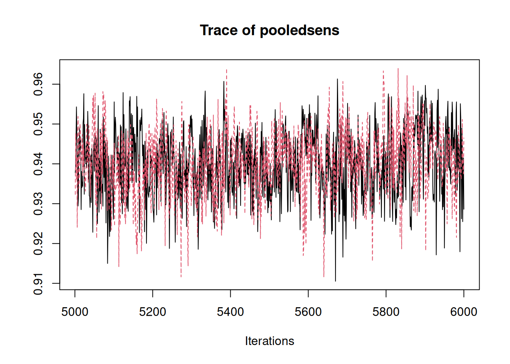
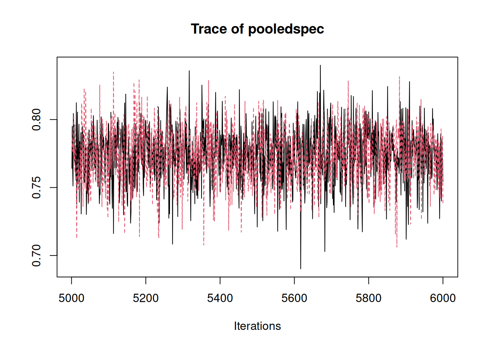
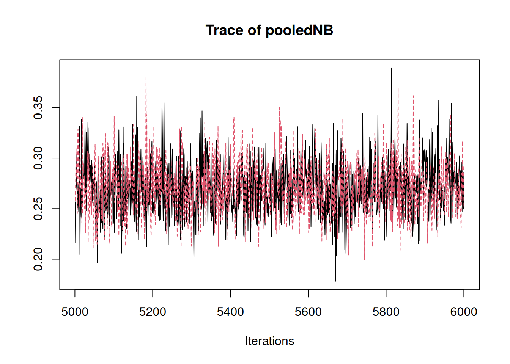
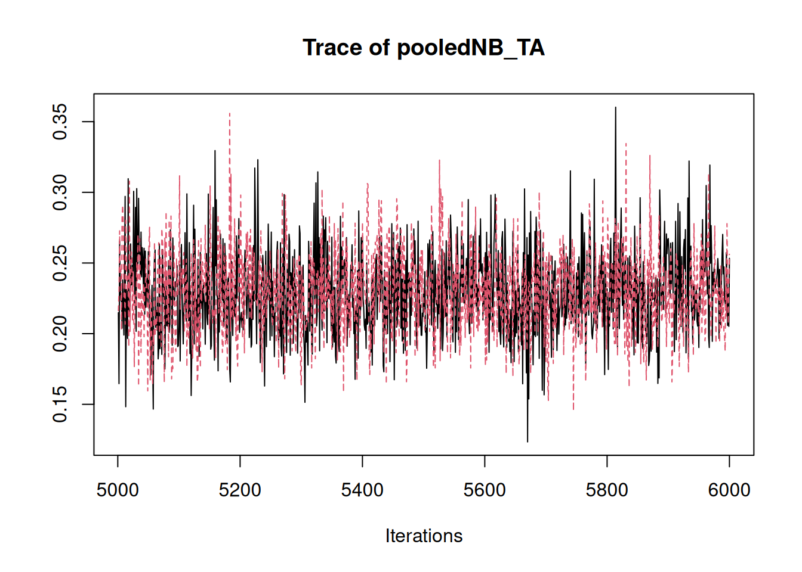
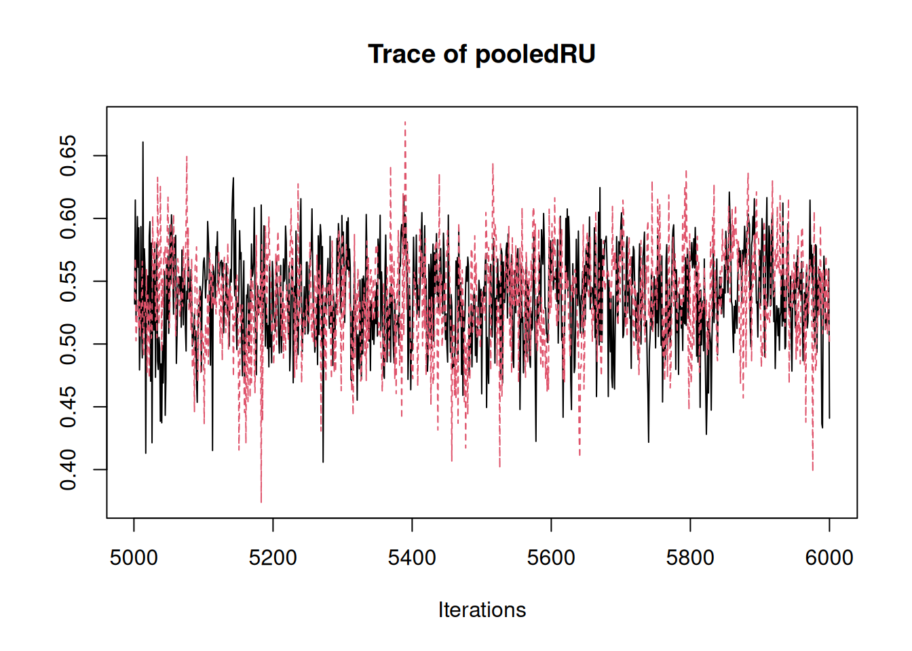
By default, we run two chains. When examining a trace plot, we look for the following:
The chains fluctuate around a stable level without obvious trends.
The chains overlap substantially and explore the same range of values.
There are no long periods where one chain stays in a very different range than the other.
If the chains appear to mix well and fluctuate in a similar range, we typically consider convergence to be adequate. If the chains remain separated or show strong trends, this indicates they fail to converge, and we may consider increasing the number of iterations or burn-in.
5 Summarize posterior draws
After checking that the chains have mixed well for key parameters, we summarize the posterior distributions of the quantities we care about. The function summarize_tri_ma() provides a convenient summary of the fitted trivariate meta-analysis. We pass the fit or fit$samples to the function, and specify the metrics we want to summarize using the metrics. By default, metrics include NB and the quantity probuseful. Note, summaries can only be computed for quantities that were sampled and returned by the model fitting function. In practice, this means that the relevant quantities must have been included in return_vars when fitting the model.
In MetaNB, some summary targets are families of related quantities, while others are single nodes from the model. Family metrics such as NB, RU, sens, and spec include pooled summaries, predictive summaries for a new setting, and optionally per-study summaries. For NB, its family of summary targets also extend to the net benefit of the default strategies treat-all and treat-none. In contrast, quantities such as pooledprev correspond to a single model node and therefore return only a single posterior summary (mean, median, and 95% credible interval), without predictive or per-study summaries.
To summarize the main pooled and predictive quantities, we can run:
summarize_tri_ma(
fit_voi$samples,
data = data_ADNEXCA125,
label_cols = c("Publication", "Country", "N", "Prev"),
metrics = c("NB", "RU", "probuseful", "sens", "spec"),
per_study_metrics = c("NB", "RU", "sens", "spec"),
return_known = FALSE, # asks to not return summaries for conditional estimates of net benefit assuming a known prevalence
include_per_study = FALSE) # asks to not return per-study estimates$NB
$NB$pooled
$NB$pooled$model
Mean Median Low High
0.2708381 0.2699689 0.2221622 0.3281561
$NB$pooled$treat_all
Mean Median Low High
0.2294501 0.2283099 0.1745434 0.2940323
$NB$predictive
$NB$predictive$model
Mean Median Low High
0.28465248 0.26492738 0.06673823 0.62296327
$NB$predictive$treat_all
Mean Median Low High
0.246344611 0.227925356 -0.005546463 0.620081486
$RU
$RU$pooled
$RU$pooled$model
Mean Median Low High
0.5362127 0.5370949 0.4581012 0.6075756
$RU$predictive
$RU$predictive$model
Mean Median Low High
0.4704831 0.5167087 -0.1143000 0.7838917
$probuseful
$probuseful$value
[1] 0.962
$sens
$sens$pooled
$sens$pooled$model
Mean Median Low High
0.9400879 0.9402488 0.9233822 0.9554444
$sens$predictive
$sens$predictive$model
Mean Median Low High
0.9277665 0.9393478 0.8075889 0.9846270
$spec
$spec$pooled
$spec$pooled$model
Mean Median Low High
0.7736047 0.7747158 0.7309911 0.8120438
$spec$predictive
$spec$predictive$model
Mean Median Low High
0.7525548 0.7743705 0.4448074 0.9239290 (More detailed interpretation of those quantities will be provided in the next section along with the forest plot visualization. For now, the main point is to illustrate how to use the summarize_tri_ma() function to obtain summaries of the posterior distributions of the quantities of interest.)
This returns a named list with one entry per requested metric. For NB, RU, sens, and spec, the output may contain up to three types of summaries: - pooled: the meta-analytic summary across studies (posterior mean, median, and 95% credible interval) (A 95% credible interval represents uncertainty around the pooled estimate. It means that, given the model and data, there’s a 95% probability that the pooled net benefit across settings lies within that interval. Unlike a frequentist interval, this has a direct probability interpretation.), - predictive: the summary for the posterior predictive distribution of the quantity in a new setting (mean, median, and 95% prediction interval), - per-study: study-specific summaries for each study, if requested.
For example, NB$pooled contains the pooled net benefit for the model and the treat-all strategy, while NB$predictive contains the mean, median and corresponding prediction intervals for a new unseen setting. Similarly, RU, sens, and spec return pooled and predictive summaries, and may also include per-study summaries when requested. The quantity probuseful is different in that it returns a single posterior probability, stored in $probuseful$value.
If we are only interested in the pooled and predictive summaries, we can keep include_per_study = FALSE, as in the example above. If we want study-specific summaries, we can request them by setting include_per_study = TRUE (which is the default) and specifying which metrics to include per-study estimates for via per_study_metrics.
The first few columns of the per-study summary data frame correspond to study labels specified in label_cols, and the remaining columns are the summary statistics for the per-study estimates of NB (mean, median, 95% credible interval lower and higher bounds). We only need to provide data and label_cols when per-study summaries are requested, because these are used to attach study information to the output. Note: If the data frame supplied to summarize_tri_ma() is not identical to the data used when fitting the model, the two data frames must have the same row order. This ensures that the study labels correspond to the correct study-specific estimates.
Having those family metrics NB, RU, sens, spec which automatically expand, as well as probuseful should be enough for most applications, but more advanced users can also check out the quantities mentioned in the advanced section for weak priors specification above.
summarize_tri_ma(
fit_voi$samples,
data = data_ADNEXCA125,
label_cols = c("Publication", "Country", "N", "Prev"),
metrics = c("NB", "sens"),
per_study_metrics = c("NB", "sens"),
return_known = FALSE,
include_per_study = TRUE)$NB$per_study Publication Country N Prev Mean Median
1 Araujo (2017) Brazil 131 0.51908397 0.46241741 0.46242820
2 Chen (2022) Taiwan 281 0.20640569 0.17595054 0.17598532
3 Diaz (2017) Venezuela 227 0.29955947 0.26297560 0.26134086
4 He (2022) China 620 0.35161290 0.30254087 0.30264298
5 Jeong (2020) South Korea 54 0.18518519 0.16895231 0.16504033
6 Joyeux (2016) France 284 0.10563380 0.08634761 0.08541108
7 Lai (2022) China 734 0.23160763 0.20629686 0.20606953
8 Lam Huong (2022) Vietnam 461 0.14099783 0.12153781 0.12111873
9 Peng (2021) China 224 0.46875000 0.42016499 0.42034123
10 Poonyakanok (2021) Thailand 357 0.17086835 0.15473575 0.15391115
11 Qian (2021) China 486 0.24691358 0.21194089 0.21190663
12 Sandal (2018) Turkey 191 0.27748691 0.24242199 0.24137954
13 Tug (2020) Turkey 285 0.09122807 0.07497458 0.07410382
14 Viora (2020) Italy 577 0.24956672 0.20713825 0.20694516
15 Yang (2022) China 376 0.31117021 0.26994754 0.26951425
16 Zhang (2022) China 282 0.36879433 0.32566420 0.32600766
17 Pelayo (2023) Spain 122 0.33606557 0.29839842 0.29766537
18 Wang And Yang (2023) China 445 0.40449438 0.36743792 0.36731482
19 Szubert (2016) Poland 204 0.34313725 0.30289378 0.30261979
20 Szubert (2016) Spain 123 0.27642276 0.24868582 0.24757780
21 Sayasneh (2016) UK, Italy 610 0.29836066 0.26508167 0.26437257
22 Meys (2017) Netherlands 326 0.35276074 0.31797953 0.31706517
23 Van Calster (2020) Sweden 278 0.25899281 0.21323649 0.21334052
24 Van Calster (2020) Italy 354 0.48022599 0.44261076 0.44226979
25 Van Calster (2020) Greece 360 0.18055556 0.13018994 0.12993355
26 Van Calster (2020) Belgium 202 0.46039604 0.42058374 0.42062099
27 Van Calster (2020) Belgium 211 0.20853081 0.17972150 0.17916290
28 Van Calster (2020) Italy 286 0.55944056 0.52997006 0.53071447
29 Van Calster (2020) Sweden 239 0.56066946 0.50913724 0.50947465
30 Van Calster (2020) Italy 145 0.49655172 0.44706952 0.44732567
31 Van Calster (2020) Italy 121 0.20661157 0.17445495 0.17284598
32 Van Calster (2020) Poland 41 0.41463415 0.33444290 0.33292189
33 Van Calster (2020) Spain 54 0.50000000 0.43577321 0.43656546
34 Van Calster (2020) Italy 48 0.31250000 0.27236327 0.26966904
35 Van Calster (2020) Italy 58 0.72413793 0.63084086 0.63119181
36 Van Calster (2020) UK, Italy 92 0.09782609 0.08486214 0.08212431
Low High
1 0.37944523 0.5463732
2 0.13249232 0.2209272
3 0.20590508 0.3217723
4 0.26604236 0.3375055
5 0.08333152 0.2725015
6 0.05495890 0.1222816
7 0.17632068 0.2364908
8 0.09220840 0.1522214
9 0.35941682 0.4835984
10 0.11919606 0.1961216
11 0.17588205 0.2525645
12 0.18109602 0.3054392
13 0.04413789 0.1141489
14 0.17342054 0.2423943
15 0.22304768 0.3189269
16 0.26783761 0.3833678
17 0.21970975 0.3781545
18 0.32446435 0.4119040
19 0.23981497 0.3668579
20 0.18020818 0.3251148
21 0.22595878 0.3053655
22 0.26515535 0.3710574
23 0.16563994 0.2663449
24 0.38990478 0.4991063
25 0.09606641 0.1681663
26 0.35077177 0.4902174
27 0.13310018 0.2338072
28 0.47168301 0.5870226
29 0.44422504 0.5725460
30 0.36712922 0.5251098
31 0.11651949 0.2396020
32 0.21642627 0.4687657
33 0.31497692 0.5544239
34 0.17039858 0.3885879
35 0.51949570 0.7499114
36 0.03921278 0.1402575For parameters that correspond to a single model node (rather than a family of related quantities), an example being pooledprev, the function returns only the pooled summary (mean, median, and 95% credible interval) without predictive or per-study summaries.
summarize_tri_ma(
fit_voi$samples,
data = data_ADNEXCA125,
metrics = c("pooledprev"))$pooledprev
$pooledprev$scalar
Mean Median Low High
0.3065051 0.3054789 0.2570890 0.3646291 The function can also compute NB and RU conditional on prevalence. If we have a plausible prevalence in mind, we can compute pooled and predictive quantities conditional on that prevalence by supplying prev_known and setting return_known = TRUE when fitting the model (see Wynants et al. (2018), Section 3.3.2).
When summarizing the results, we again set return_known = TRUE to include these quantities in the summary.
This optional addition is available for NB, RU, and probuseful.
# fit the model with a known prevalence for the target setting
fit_prev05 <- MA_NB_tri(data = data_ADNEXCA125,
tp = TP, tn = TN, n_event = n_event, n_nonevent = n_nonevent,
prior_type = "weak",
t = 0.1,
prev_known = 0.5, # example known prevalence for the target setting
return_vars = c("NB", "RU", "probuseful", "sens", "spec"),
return_known = TRUE,
seed = 123
)
# summarize the results, including the quantities conditional on the known prevalence
summarize_tri_ma(
fit_prev05,
data = data_ADNEXCA125,
metrics = c("NB"),
per_study_metrics = c("NB"),
return_known = TRUE)Including estimates/predictions at assumed know prevalence: prev_known = 0.5Compiling model graph
Resolving undeclared variables
Allocating nodes
Graph information:
Observed stochastic nodes: 108
Unobserved stochastic nodes: 122
Total graph size: 1215
Initializing model

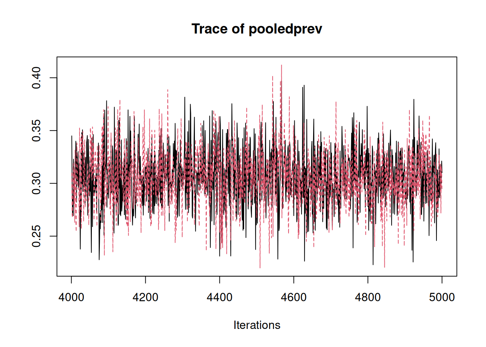
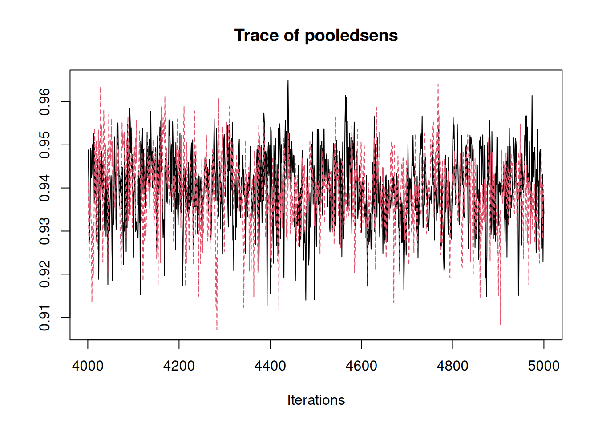
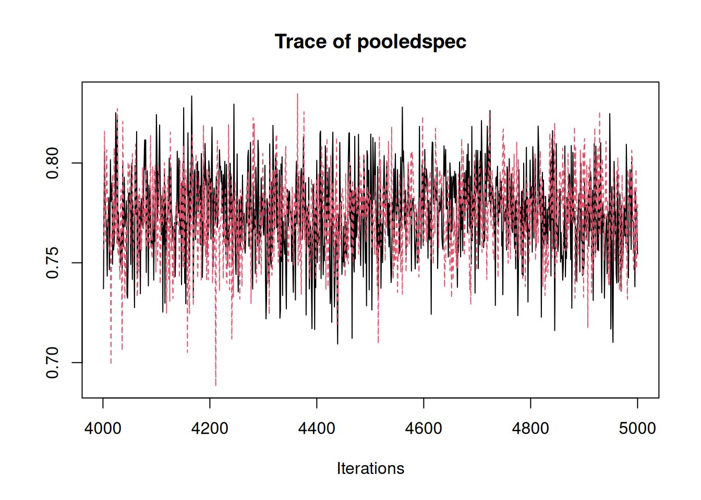
$NB
$NB$pooled
$NB$pooled$model
Mean Median Low High
0.2695784 0.2686138 0.2232428 0.3239748
$NB$pooled$treat_all
Mean Median Low High
0.2276775 0.2266657 0.1750524 0.2872073
$NB$predictive
$NB$predictive$model
Mean Median Low High
0.28492213 0.26481795 0.05939318 0.63573872
$NB$predictive$treat_all
Mean Median Low High
0.2465610 0.2253977 -0.0123709 0.6213438
$NB$pooled_known
$NB$pooled_known$model
Mean Median Low High
0.4578680 0.4578768 0.4501613 0.4653135
$NB$pooled_known$treat_all
Mean Median Low High
0.4444444 0.4444444 0.4444444 0.4444444
$NB$pred_known
$NB$pred_known$model
Mean Median Low High
0.4616724 0.4637329 0.4308031 0.4799763
$NB$pred_known$treat_all
Mean Median Low High
0.4444444 0.4444444 0.4444444 0.4444444 In the next section, we visualize the per-study and pooled net benefit estimates using forest plots and interpret the results in the context of the ADNEX example.
6 Forest plots
Similar to the summarizer, plot_forest() takes posterior samples and the original study-level data as input. The metric argument specifies which quantity to plot ("NB", "RU", "sens", or "spec"), and label_cols specifies which columns from the data should be displayed in the plot table. The function also allows saving the forest plot as a PNG or PDF file with high resolution by specifying file_png and file_pdf.
The reported_est_col can be used to supply a column that contains the reported point estimates of the quantity of interest in the original studies, which we recommend to include in the plot. When they are not available, the function will use the input data to either calculate or take the results from the trivariate meta-analysis. For net benefit, when reported estimates are not available from primary studies, the point estimates are calculated from the study-level counts (TP, TN, n_event, and n_nonevent) using the formula prevalence * sensitivity - (1 - prevalence) * (1 - specificity) * t / (1 - t). Hence, the threshold t must be supplied in case study-level NB values or confidence intervals need to be calculated from the observed counts. Similarly, for sensitivity and specificity, when the reported estimates are not available from primary studies, the function will compute them from input data. The reported_low_col and reported_high_col can be used to specify columns that contain the lower and upper bounds of the confidence intervals for the reported estimates, which will be used in the forest plot if supplied. When they are not supplied, the function will compute the confidence intervals from the input data. For relative utility, its computation is entirely based on the trivariate model. The argument interval_fallback can be used to specify how to compute the intervals when they are not reported in the original studies. For all the metrics (NB, RU, sens, and spec), the fallback model which uses the credible intervals from posterior summaries from the trivariate meta-analysis is available, although we do not recommend this as these would deviate from the confidence intervals in the original studies due to borrowing-of-strength and shrinkage towards the pooled estimate. For net benefit, the fallback frequentist can be used, which computes the confidence intervals using an analytic formula based on the input data, without borrowing strength across studies (Sande et al. 2020). For sensitivity and specificity, the fallback frequentist can be used, which computes the confidence intervals using the Wilson’s method (Agresti and Coull 1998; Brown et al. 2001) based on the input data, without borrowing strength across studies. For relative utility, there’s no frequentist method available, and the only fallback method is to use the credible intervals from posterior summaries from the trivariate meta-analysis. The argument mark_imputed can be turned on to indicate which studies have imputed estimates (i.e. those that are calculated from the input data or estimated using other alternative methods or estimated using the Bayesian trivariate meta-analysis, rather than directly reported in the original studies), which will be marked with a different symbol in the forest plot. During running, messages will also be printed to indicate which studies have imputed estimates and which method is used for the point estimates and intervals for those studies. If mark_imputed is turned on, a dagger will be added to the value imputed for point estimate, and an asterisk will be added to the interval when the interval is imputed. When mark_imputed is turned off, the imputed estimates will not be marked differently in the forest plot, but messages will still be printed to indicate which studies have imputed estimates and which method is used for the point estimates and intervals for those studies.
For additional arguments that can be used to customize the forest plot, please refer to the documentation by running ?plot_forest.
plot_forest(
fit_voi$samples,
data = data_ADNEXCA125 %>%
mutate(Prev = paste0(round(Prev * 100), "%")),
tp = TP,
tn = TN,
n_event = n_event,
n_nonevent = n_nonevent,
label_cols = c("Publication", "Country", "N", "Prev"),
study_label_col = "Publication",
metric = "NB",
t = 0.1,
xlim = c(-0.1, 0.7),
mark_imputed = FALSE
)Using center = 'Mean' (default), so posterior means are displayed as the central estimates in the forest plot. Set center = 'Median' to use posterior median instead.All point estimates were replaced by study-level calculated values because reported estimates were unavailable.All intervals were replaced by frequentist confidence interval fallback because reported study intervals were unavailable.xlab will be deprecated, use set_labs() instead.xlim, ticks_at will be deprecated, use set_xaxis() instead.theme will be deprecated, use style of forest() instead.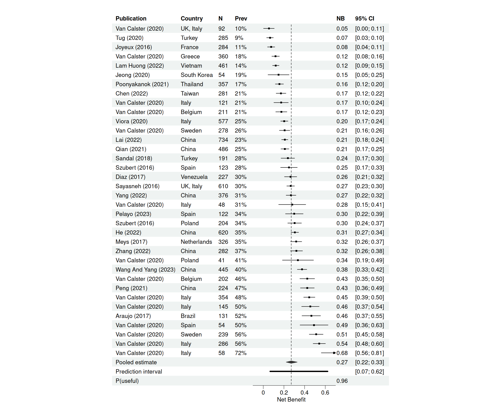
The forest plot shows the net benefit of the model across the 36 external validation studies of ADNEX at a threshold of 0.1. Each square represents the estimated net benefit in one study. The horizontal line shows its 95% confidence interval estimated by the aforementioned method. Note here the mark_imputed is turned off because the net benefit estimates for all the studies are computed from the input data. We see substantial variation across studies with net benefit ranges from around 0.05 up to around 0.68. This reflects heterogeneity between centers.
At the bottom, the diamond represents the pooled net benefit across studies. The pooled net benefit estimate for the model is 0.27, with a 95% credible interval from 0.22 to 0.33. This means that, using the model is equivalent to identifying about 27 net true positives per 100 patients without increasing unnecessary interventions. For comparison, the net benefit of treating all patients is 0.23. So the model improves net benefit by about 0.04, corresponding to 4 additional net true positives per 100 patients compared to the treat all strategy. If we scale this to the European population of around 350000 women assessed each year, this difference corresponds to roughly 14000 additional correctly managed cancers per year.
Below that, we see the prediction interval, from 0.07 to 0.62. This interval reflects the range of net benefit we would expect in a new center. So although the summary estimate is positive, the performance we can expect for an unseen setting can vary substantially.
We’ve seen the comparison of the model to treat all which yields a difference of 0.04 in net benefit. The net benefit of the treat none strategy is by definition 0. This shows that the model outperforms the default treat all and treat none strategies.
Finally, we estimate the probability that the model is useful in a new setting. By useful, we mean that its net benefit exceeds that of the best alternative strategy at this threshold. For ADNEX at threshold 0.1, this probability is 0.96. So in 96% of new centers, we expect the model to provide higher net benefit than the two default strategies.
Forest plots are also available for relative utility (RU), sensitivity (sens), and specificity (spec), and can be obtained by changing the metric argument in the plot_forest() function.
7 Value-of-information analysis
Value-of-information metrics like Expected Value of Perfect Information (EVPI) help estimate how much better a decision surrounding prediction model or biomarker adoption could become if we had more information before making a choice. We can obtain quantities such as the expected value of perfect information (EVPI) by setting compute_EVPI = TRUE when fitting the model. This adds the JAGS nodes required for VOI calculations and returns VOI metrics in the fitted object.
Using the same fitted object for the trivariate meta-analysis summaries and the VOI metrics is recommended. In JAGS, adding nodes and changing the set of monitored nodes can change the MCMC draws, even if the model settings and seed are the same. Therefore, when we plan to report both the meta-analysis results and VOI quantities, we fit the model once with compute_EVPI = TRUE and use the same posterior samples throughout.
compute_evppi_prev can be used to turn on the calculation of expected value of perfect partial information (EVPPI) for prevalence, which is set to TRUE by default. The argument center_rows can be used to specify which rows (centers) to include in the center-specific EVPI calculation, which by default is set to NULL, and can be turned on by setting a vector of row numbers corresponding to the centers to include in the center-specific EVPI calculation. The argument center_label_cols can be used to specify which columns to use for labeling the centers in the output of center-specific EVPI, which is only relevant when center_rows is not NULL. The argument auto_resample can be used to specify whether to automatically draw additional samples until diagnostics indicate that the estimates of VOI metrics are stable, which is set to TRUE by default. When auto_resample is turned on, the function will check the stability of the MCMC draws after the initial sampling process, and if the diagnostics indicate that the estimates are not stable, it will automatically draw additional samples until they are stable. In this vignette, we set auto_resample = FALSE to keep the runtime short. More arguments related to the diagnostics and automatic resampling process can be found in the documentation by running ?MA_NB_tri.
Here we use the fit_voi object created above with the code reiterated for clarity.
# fit with VOI enabled
fit_voi <- MA_NB_tri(data = data_ADNEXCA125,
tp = TP, tn = TN, n_event = n_event, n_nonevent = n_nonevent,
prior_type = "weak",
t = 0.1,
return_vars = c("NB", "RU", "probuseful", "sens", "spec"),
seed = 123,
prev_known = 0.5,
return_known = TRUE,
compute_EVPI = TRUE, # enable the computation of VOI quantities
auto_resample = FALSE, # whether to automatically draw additional samples until diagnostics indicate that the EVPI estimates are stable
center_rows = 1:36, # which rows (centers) to calculate the center-specific EVPI calculation
center_label_cols = c("Publication", "Country") # which columns to use for labeling the centers in the output of center-specific EVPI
)7.1 Diagnostics and automatic resampling
After fitting the model with VOI enabled, we can check the diagnostics for the VOI estimates by running fit_voi$voi_diagnostics. We are good if the sigma’s (signal-to-noise ratio for the difference between competing strategies) are larger than sigma_min which by default is set to 2, and the effective sample size (ESS) is larger than ess_min which by default is set to 400. Here we see all the diagnostics are good, with the exception that min_sigma_center_evpi indicates the smallest signal-to-noise ratio for the center-specific EVPI estimates is 1, which is smaller than the default threshold of 2, and needs_more_sampling = TRUE also indicates that more sampling is needed to obtain stable estimates for the center-specific EVPI. This is not surprising since stop_reason correctly indicated that we set auto_resample = FALSE and thus the function did not automatically draw more samples to obtain stable estimates. If we want to obtain stable estimates, we can set auto_resample = TRUE when fitting the model, but we have to know that this will likely require a much longer running time if we want to obtain stable estimates for the center-specific EVPIs for all the centers, and we can set max_draws to control the maximum number of MCMC draws to be used in the automatic resampling process to avoid endless running time.
fit_voi$voi_diagnostics# A tibble: 1 × 15
n_draws sigma_strategy sigma_evpi_cluster sigma_evpi_pop sigma_min ess_min
<int> <dbl> <dbl> <dbl> <dbl> <dbl>
1 2000 86.8 5.35 Inf 2 400
ess_pooledNB ess_pooledNB_TA ess_probuseful min_sigma_center_strategy
<dbl> <dbl> <dbl> <dbl>
1 1472. 1497. 1647. 215.
min_sigma_center_evpi n_centers_requested needs_more_sampling rounds
<dbl> <int> <lgl> <dbl>
1 1 36 TRUE 1
stop_reason
<chr>
1 auto_resample=FALSE8 Population-level and cluster-level EVPI, and EVPPI for prevalence
We can obtain the population-level EVPI, cluster-level EVPI, and EVPPI for prevalence from the voi_metrics element of the fitted object. winner_strategy indicates which strategy has the highest expected net benefit under current information, based on the posterior predictive distribution. NB_currentinfo is the expected net benefit of this current optimal strategy, chosen among treat-none, the model, and treat-all, based on the posterior predictive distribution. The EVPI quantities are calculated relative to this current decision, so they represent the expected net benefit gain from resolving uncertainty about which strategy should be chosen. NB_cluster_perfectinfo, NB_population_perfectinfo, and NB_cluster_partialprev_pi are the expected net benefits under cluster-level perfect information (i.e. infinite sample size per center), population-level perfect information, and cluster-level partial perfect information for prevalence (assuming prevalence is known but sensitivity and specificity are not), respectively.
Interpretation: Population-level EVPI captures the expected NB gain if our recommendation of the global strategy was made based on perfect information. It asks the question: if we had complete information, would we change the overall strategy that we recommend? Here the population EVPI is 0, which means that even if we had perfect information, we would not change the overall recommendation to adopt the model.
EVPI at the cluster level captures the expected net benefit gain if we recommend an optimal strategy for each cluster, if we knew the full information for each cluster (seen and unseen). It asks a different question: if each center could choose its own optimal strategy, would perfect information change those center-specific decisions? The cluster-level EVPI was 0.000502. When scaled to the European population, this corresponds to approximately 176 additional true positives, or about 20 avoided unnecessary interventions given the threshold of 0.1. So while the global recommendation is stable, there remains some value in resolving uncertainty at the center level.
But asking every center to know perfect information about sensitivity, specificity and prevalence is quite demanding. So we can ask a more practical question. What if we knew the disease prevalence perfectly in each center? That alone could already help guide decisions. For example, in a center with very high prevalence, they might be better off treating all patients. In a center with lower prevalence, they might prefer using the model instead. The expected value of perfect prevalence information measures the expected gain from knowing prevalence perfectly, while sensitivity and specificity remain uncertain. In this case, the EVPPI was small for the case study, which was 0.000038, corresponding to 13 net true positives when scaled to the EU population.
diff_modelvsTA gives the difference in net benefit between the model and the treat all strategy. Pooled gives the difference based on the posterior distribution and corresponds to the pooled net benefit of the model minus the pooled net benefit of treat all. New gives the difference based on the predictive distribution and represents the expected difference in a new setting. They may differ, and the latter is recommended to be used for implementation decisions (Ades et al. 2005). Intervals for both represent the 95% credible and predictive intervals, respectively.
options(scipen = 999)
as.data.frame(fit_voi$voi_metrics) winner_strategy NB_currentinfo NB_cluster_perfectinfo
1 model 0.2846525 0.2851547
EVPI_cluster_perfectinfo NB_population_perfectinfo
1 0.0005022342 0.288108
EVPI_population_perfectinfo NB_cluster_partialprev_pi
1 0 0.2846902
EVPPI_cluster_perfectprevalenceinfo
1 0.00003770127
diff_modelvsTA
1 Pooled (mean [2.5%, 97.5%]): 0.041 [0.033, 0.049]; New (mean [2.5%, 97.5%]): 0.038 [-0.006, 0.077]8.1 Center-specific EVPI
The meta information about the center-specific EVPI calculation can be found in fit_voi$voi_center_meta, which contains the center_row and center_label_cols which we supplied when fitting the model, making it easier to keep track of which centers are included in the center-specific EVPI calculation and to interpret and report the results.
fit_voi$voi_center_meta center_row center_label
1 1 Publication=Araujo (2017), Country=Brazil
2 2 Publication=Chen (2022), Country=Taiwan
3 3 Publication=Diaz (2017), Country=Venezuela
4 4 Publication=He (2022), Country=China
5 5 Publication=Jeong (2020), Country=South Korea
6 6 Publication=Joyeux (2016), Country=France
7 7 Publication=Lai (2022), Country=China
8 8 Publication=Lam Huong (2022), Country=Vietnam
9 9 Publication=Peng (2021), Country=China
10 10 Publication=Poonyakanok (2021), Country=Thailand
11 11 Publication=Qian (2021), Country=China
12 12 Publication=Sandal (2018), Country=Turkey
13 13 Publication=Tug (2020), Country=Turkey
14 14 Publication=Viora (2020), Country=Italy
15 15 Publication=Yang (2022), Country=China
16 16 Publication=Zhang (2022), Country=China
17 17 Publication=Pelayo (2023), Country=Spain
18 18 Publication=Wang And Yang (2023), Country=China
19 19 Publication=Szubert (2016), Country=Poland
20 20 Publication=Szubert (2016), Country=Spain
21 21 Publication=Sayasneh (2016), Country=UK, Italy
22 22 Publication=Meys (2017), Country=Netherlands
23 23 Publication=Van Calster (2020), Country=Sweden
24 24 Publication=Van Calster (2020), Country=Italy
25 25 Publication=Van Calster (2020), Country=Greece
26 26 Publication=Van Calster (2020), Country=Belgium
27 27 Publication=Van Calster (2020), Country=Belgium
28 28 Publication=Van Calster (2020), Country=Italy
29 29 Publication=Van Calster (2020), Country=Sweden
30 30 Publication=Van Calster (2020), Country=Italy
31 31 Publication=Van Calster (2020), Country=Italy
32 32 Publication=Van Calster (2020), Country=Poland
33 33 Publication=Van Calster (2020), Country=Spain
34 34 Publication=Van Calster (2020), Country=Italy
35 35 Publication=Van Calster (2020), Country=Italy
36 36 Publication=Van Calster (2020), Country=UK, ItalySimilar quantities to what we described for the population-level and cluster-level EVPI and EVPPI for prevalence are also calculated at the center level, and can be found in fit_voi$voi_center_metrics, where each row corresponds to a center, and the columns include for example NB_model_mean which is the net benefit of the model for that center, NB_TA_mean which is the net benefit of the treat all strategy for that center, NB_center_currentinfo which is the net benefit of the model for that center under current information, NB_center_perfectinfo which is the net benefit of the model for that center under perfect information, and EVPI_center_perfectinfo which is the EVPI for that center.
fit_voi$voi_center_metrics# A tibble: 36 × 10
center_row NB_model_mean NB_TA_mean NB_center_currentinfo
<int> <dbl> <dbl> <dbl>
1 1 0.462 0.453 0.462
2 2 0.176 0.124 0.176
3 3 0.263 0.220 0.263
4 4 0.303 0.273 0.303
5 5 0.169 0.116 0.169
6 6 0.0863 0.0186 0.0863
7 7 0.206 0.147 0.206
8 8 0.122 0.0494 0.122
9 9 0.420 0.399 0.420
10 10 0.155 0.0859 0.155
11 11 0.212 0.165 0.212
12 12 0.242 0.205 0.242
13 13 0.0750 0.00258 0.0750
14 14 0.207 0.166 0.207
15 15 0.270 0.234 0.270
16 16 0.326 0.302 0.326
17 17 0.298 0.262 0.298
18 18 0.367 0.331 0.367
19 19 0.303 0.269 0.303
20 20 0.249 0.204 0.249
21 21 0.265 0.224 0.265
22 22 0.318 0.285 0.318
23 23 0.213 0.176 0.213
24 24 0.443 0.422 0.443
25 25 0.130 0.0890 0.130
26 26 0.421 0.397 0.421
27 27 0.180 0.125 0.180
28 28 0.530 0.508 0.530
29 29 0.509 0.502 0.509
30 30 0.447 0.429 0.447
31 31 0.174 0.118 0.174
32 32 0.334 0.312 0.334
33 33 0.436 0.406 0.436
34 34 0.272 0.230 0.272
35 35 0.631 0.629 0.631
36 36 0.0849 0.0170 0.0849
NB_center_perfectinfo EVPI_center_perfectinfo center_winner_strategy
<dbl> <dbl> <chr>
1 0.463 0.00106 model
2 0.176 0 model
3 0.263 0 model
4 0.303 0 model
5 0.169 0.00000873 model
6 0.0863 0 model
7 0.206 0 model
8 0.122 0 model
9 0.420 0.0000762 model
10 0.155 0 model
11 0.212 0 model
12 0.242 0 model
13 0.0750 0 model
14 0.207 0 model
15 0.270 0 model
16 0.326 0.0000112 model
17 0.298 0.00000151 model
18 0.367 0 model
19 0.303 0 model
20 0.249 0 model
21 0.265 0 model
22 0.318 0 model
23 0.213 0.00000249 model
24 0.443 0.00000378 model
25 0.130 0.00000486 model
26 0.421 0.0000113 model
27 0.180 0 model
28 0.530 0.00000174 model
29 0.510 0.000683 model
30 0.447 0.000152 model
31 0.174 0 model
32 0.335 0.00104 model
33 0.436 0.0000384 model
34 0.272 0.0000117 model
35 0.634 0.00351 model
36 0.0849 0 model
sigma_center_strategy sigma_center_evpi center_nodes_found
<dbl> <dbl> <lgl>
1 491. 12.0 TRUE
2 346. Inf TRUE
3 403. Inf TRUE
4 736. Inf TRUE
5 215. 1 TRUE
6 522. Inf TRUE
7 614. Inf TRUE
8 611. Inf TRUE
9 580. 4.38 TRUE
10 612. Inf TRUE
11 499. Inf TRUE
12 337. Inf TRUE
13 568. Inf TRUE
14 528. Inf TRUE
15 489. Inf TRUE
16 500. 2.44 TRUE
17 324. 1 TRUE
18 733. Inf TRUE
19 420. Inf TRUE
20 300. Inf TRUE
21 594. Inf TRUE
22 523. Inf TRUE
23 380. 1.09 TRUE
24 708. 1.42 TRUE
25 319. 1 TRUE
26 526. 2.10 TRUE
27 319. Inf TRUE
28 801. 1.80 TRUE
29 692. 13.4 TRUE
30 487. 5.62 TRUE
31 260. Inf TRUE
32 226. 9.01 TRUE
33 310. 3.07 TRUE
34 215. 1.79 TRUE
35 478. 22.2 TRUE
36 293. Inf TRUE Here the interpretation of EVPI becomes, for a specific center, how much would we gain if knew the optimal strategy for that center with certainty? For example, for row 9, the center-specific EVPI is smaller than 0.00001, which means that we would gain very little by knowing the optimal strategy for that center with certainty.
9 Fitting with different priors
Finally, we can also fit the model with different priors. For example, to fit the model with a Wishart prior instead of the default weakly informative priors, we can set prior_type = "wishart" when fitting the model. When using the Wishart prior, we put the prior on the variance‐covariance matrix as a whole. This prior is not uninformative (Wynants et al. 2018), and thus is not recommended. Nevertheless, for interested users, prior_type = "wishart" can be used, with also optional customization of prior hyperparameters via wishart_priors, and the posterior summaries, forest plots, and VOI metrics can be obtained the same way as when the weakly realistic priors are used. Users interested in the full model specification can inspect the JAGS code in model_text_wishart.R in the GitHub repository.
# fit with VOI enabled
fit_voi_wishart <- MA_NB_tri(data = data_ADNEXCA125,
tp = TP, tn = TN, n_event = n_event, n_nonevent = n_nonevent,
prior_type = "wishart",
t = 0.1,
return_vars = c("NB", "RU", "probuseful", "sens", "spec"),
seed = 123,
prev_known = 0.5,
return_known = TRUE,
compute_EVPI = TRUE,
auto_resample = FALSE,
center_rows = 1:36,
center_label_cols = c("Publication", "Country")
)